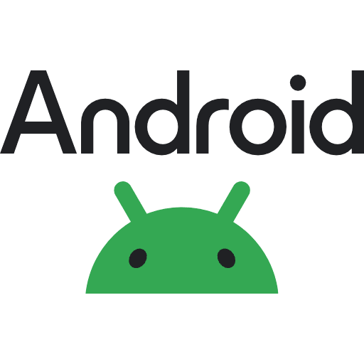

GörüngüKimyasal değişim, hissedilebilir bir veri.
Görüngü, görme engelli öğrencilerin deney sürecine bağımsız katılımını güçlendiren haptik bir bileklik ve eşlik eden mobil uygulamadır. Altı sensörden alınan veriler ESP32 ve ESP-NOW ile bilekliğe taşınır; pH, renk, sıcaklık, gaz ve bulanıklık değişimleri bilekte anlaşılır titreşim desenlerine dönüşür. Uygulama ise adım akışı, güvenlik uyarıları ve sesli komutlarla deneyin kontrolünü öğrencinin elinde tutar.


Sistem nasıl çalışır
Sensör verisi toplanır, kablosuz aktarılır ve öğrencinin bileğinde titreşime dönüşür.
Altı sensörle ölçüm
pH, iletkenlik, sıcaklık, bulanıklık, gaz ve renk sensörleri deney boyunca veri toplar.
ESP32 + ESP-NOW
Arduino Mega’dan gelen veriler ESP32 ile kablosuz olarak bilekliğe aktarılır.
Haptik geri bildirim
Bileklikteki 3 titreşim motoru, kimyasal değişimleri eş zamanlı olarak hissettirir.
Deney seti
9 ve 10. sınıf müfredatından seçilen deneyler, kimyasallar, ekipmanlar ve modellemeler aynı sette.
Bileklik tasarımı
Görüngü iki parçadan oluşur: kasa ve kayış. Kasa; ESP32, 3.7 V 1500 mAh Li-Po pil ve Type-C şarj devresini içerir. Kayış; 3 titreşim motoru, transistörler, 4.7 kΩ dirençler ve bağlantı kablolarıyla tek yüzeyde toplanır.
Sensör kutusu
Sensörlerin güvenliği ve arızaların hızlı giderimi için tasarlandı.
-
🔧Arduino Mega ve ESP32 kart
-
🧪pH, iletkenlik, sıcaklık, bulanıklık, gaz ve renk sensörleri
-
💡Çalışma durumunu gösteren LED’ler
-
🧱İç altıgen PLA (3D baskı), dış altıgen pleksi
-
📐Tinkercad üzerinden tasarım
Uygulama özellikleri
Deney akışını yönetmek, güvenliği hatırlatmak ve haptik geri bildirimi senkronlamak için tasarlandı.
Zaman kodlu deney akışı
Video adımları ve gözlem notları saniye bazında eşlenir, deneyin ritmi kaybolmaz.
Haptik geri bildirim
Sensör eşikleri ve adım tetikleri bileklikteki motorlara net bir dokunsal dil olarak aktarılır.
Sesli komut ve TTS
“Sonraki adım” gibi komutlarla ilerle, kritik uyarıları sesli olarak dinle.
Güvenlik ve GHS ikonları
Deney öncesi güvenlik modalları ve risk ikonlarıyla güvenli başlatma sağlanır.
Rehber ve içerik kütüphanesi
Öğretmen/öğrenci kitapçıkları ve deney açıklamaları tek bir arayüzde toplanır.
Sensör ve BLE izleme
Sensör verileri ve bileklik bağlantısı uygulama üzerinden takip edilir.
Uygulamayı hemen kur
Görüngü uygulamasını Android cihazına indirip kurun. APK dosyası harici bağlantı üzerinden sağlanır.

Android kurulum paketi (APK)
Android cihazlar için kurulum dosyası. İndirme bağlantısı dış kaynak üzerinden sağlanır.
Şimdi indirKurulum desteği
APK kurulumu sırasında karşılaşabileceğiniz sorunlar ve net çözümler.
“Bilinmeyen kaynaklar engellendi” uyarısı
Ayarlar > Güvenlik / Gizlilik > Bilinmeyen uygulamalar bölümünden kullandığınız dosya yöneticisine veya tarayıcıya izin verin.
“Uygulama yüklenmedi” hatası
Dosya bozuk inmiş olabilir. APK’yı yeniden indirin. Eski sürüm yüklüyse kaldırıp tekrar deneyin.
Play Protect engelliyor
Play Protect uyarısında “Yine de yükle” seçeneğini seçin veya Play Protect taramasını geçici olarak kapatın.
Depolama alanı yetersiz
Telefonunuzda yeterli boş alan bırakın. Gereksiz uygulamaları kaldırıp tekrar kurmayı deneyin.
İndirme tamamlanmıyor
Bağlantıyı kontrol edin. Farklı bir tarayıcıyla tekrar indirin ve dosya boyutunun sıfır olmadığını doğrulayın.